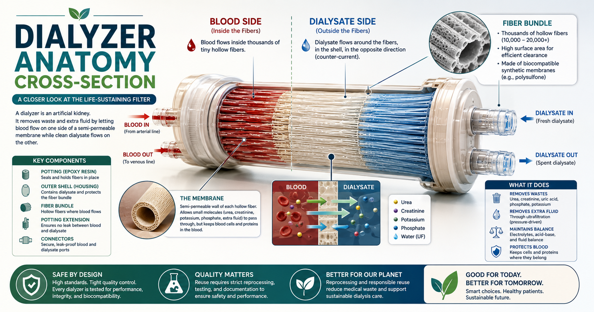
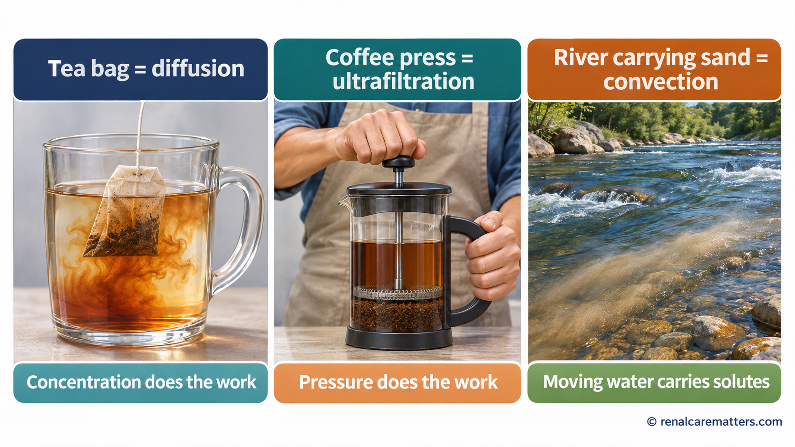
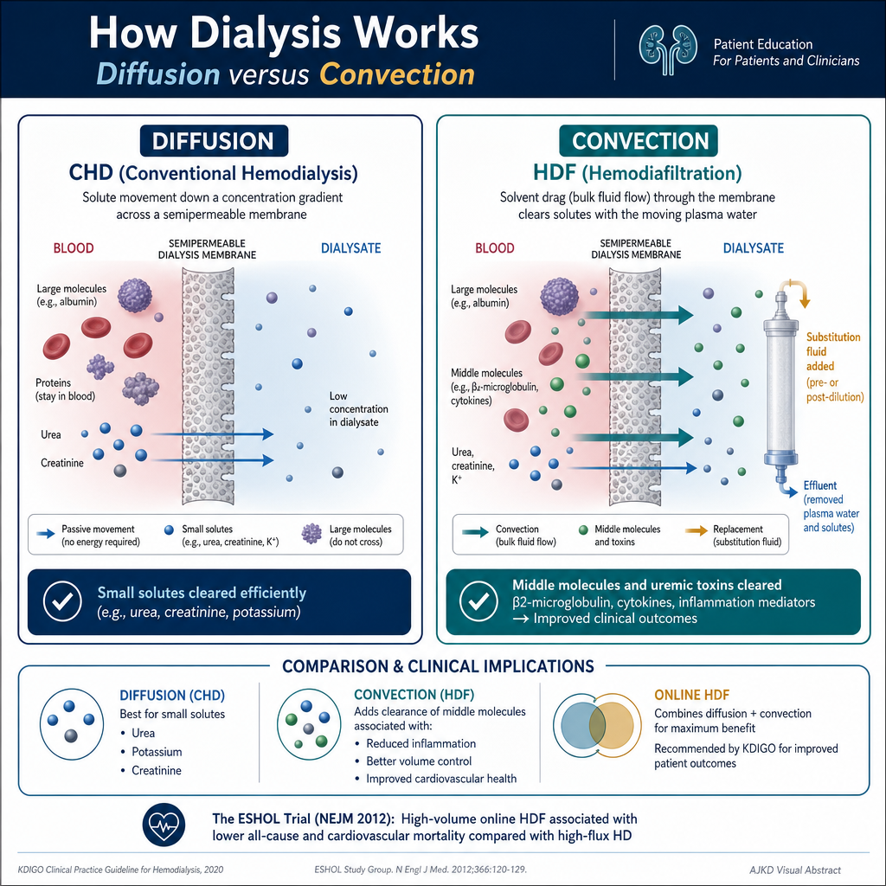
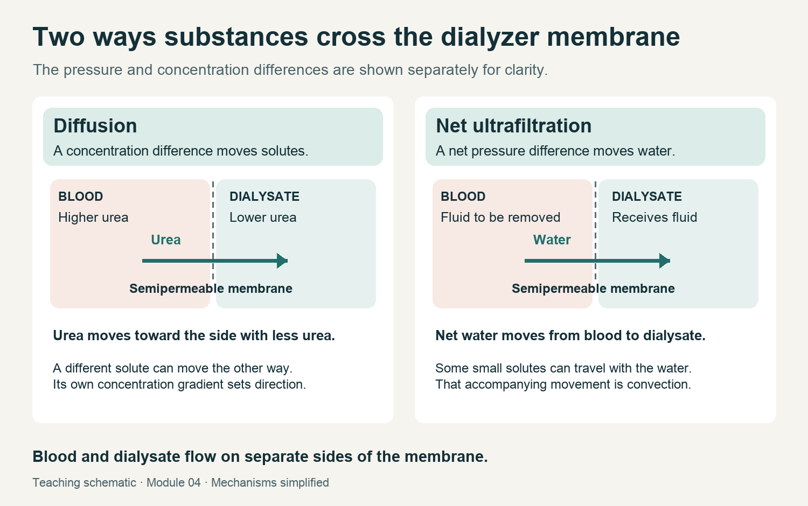
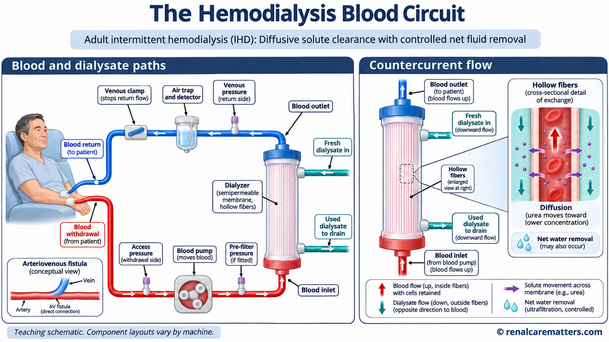
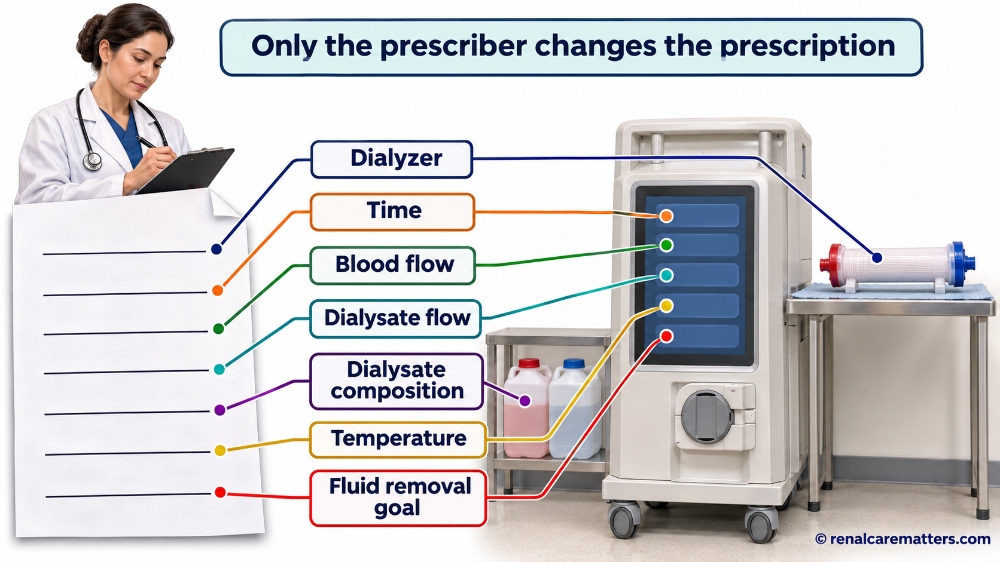
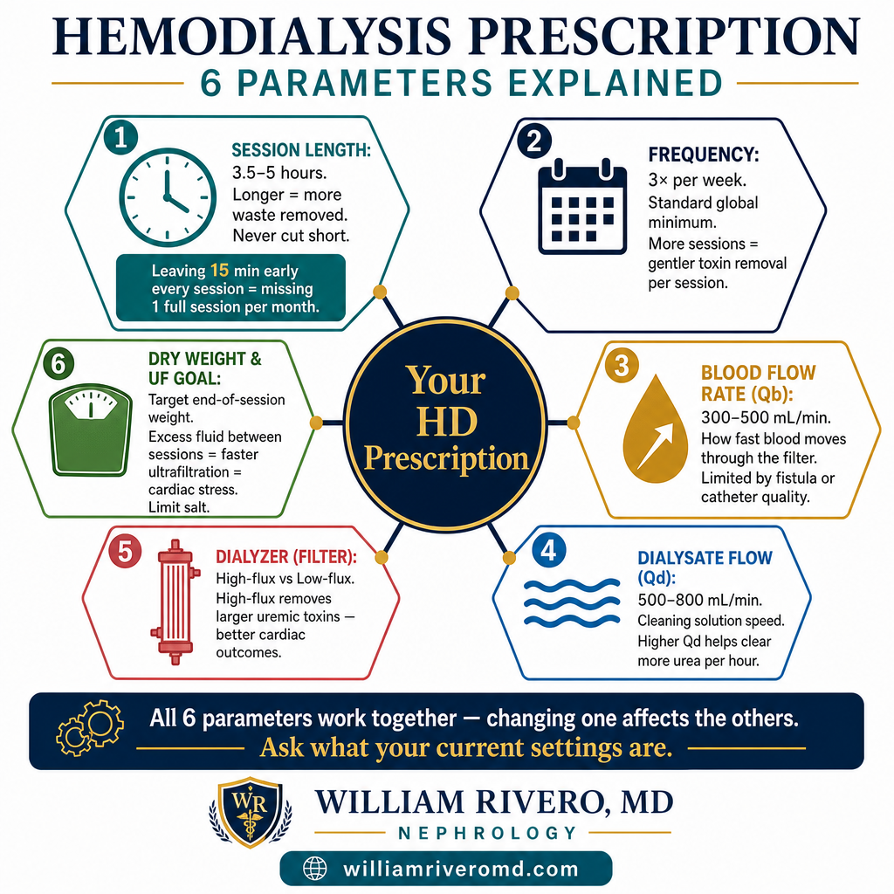
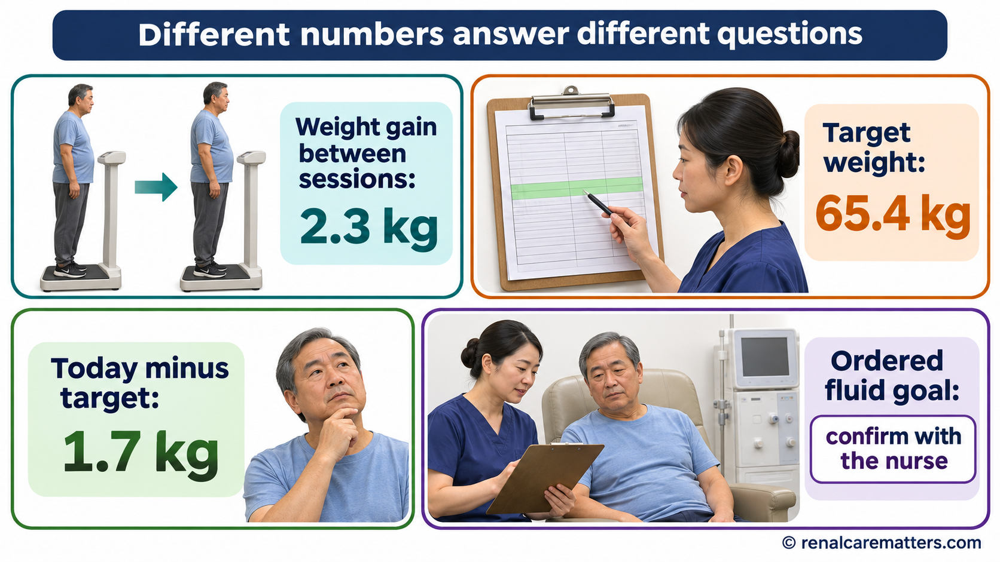
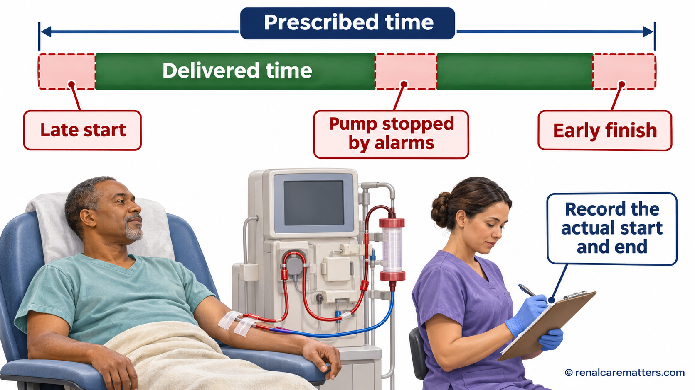
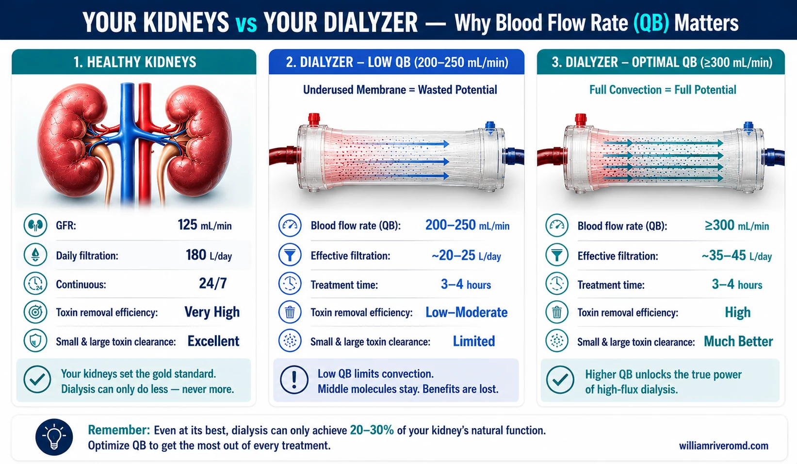

How a dialyzer removes wastes and water, what dialysate is for, how the fluid numbers differ, and what adequacy tests measure.
PublishedNailathalaGipatikPepalwal:ReferencesMga SanggunianMga TinubdanReng Reperensya:11Audience: Entry-level dialysis technicians and trainees · preceptors, head nurses, and training providersRead timeOras ng pagbasaOras sa pagbasaOras ning pamamasa:
This module is study material for dialysis technicians. It explains why safe practice works the way it does. It does not replace the physician’s orders, the supervising nurse’s direction, your unit’s approved procedures, or the manufacturer’s instructions for use. What a technician may do differs between countries and between facilities, so do only the tasks you are trained, assigned, and signed off to do. Every case is fictional.
Learning objectives
After this module you should be able to
Distinguish diffusion, ultrafiltration and convection.
Describe the dialyzer membrane, opposing flows and dialysate, and recognize what needs pre-use verification.
Distinguish measured interdialytic gain, target weight, prescribed ultrafiltration volume and ultrafiltration rate.
Explain what the urea reduction ratio (URR) and Kt/V measure and identify sampling or documentation discrepancies.
Classroom 8 hSkills lab 4 hSupervised placement 10 h
Pre-testBefore you read, answer the 5 self-assessment questions and note your score. After the module, select New set of questions and compare. The difference is what you learned; the questions you still miss are what to reread.
Start here
The big picture, in plain words
In plain wordsPicture a dialyzer as a bundle of very thin hollow straws packed inside a tube. Blood flows inside the straws, and a cleaning fluid called dialysate flows around them. Wastes pass through the straw walls into the fluid, and extra water is pushed out by pressure. That is the whole idea. The rest of this module is detail.
The picture has a limit. A drinking straw has a solid wall, and a dialyzer fiber does not. Its wall is a membrane with pores that let water and small particles through but hold back blood cells and large proteins. The three everyday pictures below show the three ways that substances cross it.

Figure 1. Inside a dialyzer. Blood runs through thousands of hair-thin hollow fibers; dialysate runs around them. The fiber wall is the membrane.
Figure 2 · Three everyday pictures
Tea bag = diffusionColor spreads out of a tea bag into the water because it is more concentrated inside the bag. Nothing pushes it. Wastes such as urea leave the blood the same way.
Coffee press = ultrafiltrationPushing the plunger forces water through a mesh. Pressure does the work. Extra water leaves the blood the same way.
River carrying sand = convectionMoving water drags dissolved substances along with it.
Figure 3 · Key terms for this module
Semipermeable membraneA wall with pores that let water and small particles through but hold back blood cells and large proteins.
DialysateThe prepared fluid that flows around the fibers and receives the wastes.
Countercurrent flowBlood and dialysate flowing in opposite directions. It keeps cleaning efficient along the whole length of the fiber.
Target weightThe weight the clinical team aims for at the end of treatment. It is also called dry weight.
Ultrafiltration goalThe amount of fluid ordered to be removed in this session.

Figure 4. Tea bag, coffee press, river. Three everyday pictures, a tea bag, a coffee press, and a river, each matched to a dialysis transport process.
Opening case · fictional
Case: Which number is the fluid removal goal?
It is Saturday, 06:40, and you are preparing for the first shift. You open the fictional record of Mr. Arnel dela Cruz, 59. His last measured post-dialysis weight was 64.8 kg. Today his pre-dialysis weight is 67.1 kg, and the chart lists a current target weight of 65.4 kg. Nobody has yet confirmed the ultrafiltration goal for today’s session. A coworker, Mr. Jun Navarro, glances at the screen and says, “He gained 2.3 kg. Just enter that for fluid removal.”
Before reading on, decide:
Which two weights show what changed between sessions?
What is the difference between today’s pre-dialysis weight and the charted target weight?
What must be verified before either number is used in setup?
Keep your answers in mind. The lesson gives you what you need, and the case review near the end shows one sound response.
Lesson · part 1
How the dialyzer works

Figure 5. Diffusion and convection. In diffusion, small wastes spread across the membrane toward the cleaner side. In convection, moving water carries larger wastes with it.
Think of a tea bag in a cup of hot water. The tea moves out through the paper into the water because there is more of it inside than outside, and the leaves stay in the bag because they are too large to pass. A dialyzer works on the same idea, with blood inside the bag and dialysate outside. The picture has a limit. A cup of tea soon reaches the same strength inside and out, and the movement stops. A dialyzer keeps the difference alive by running fresh fluid past the blood the whole time.
Blood moves through hollow fibers inside the dialyzer. Dialysate, also called dialysis fluid, flows around the outside of the fibers in a separate compartment. The fiber walls form a semipermeable membrane. In normal use, water and selected solutes cross it, while blood cells and most large proteins stay on the blood side. The two streams usually flow in opposite directions. This countercurrent flow keeps a concentration difference along the whole length of the fibers, and that improves exchange.1,2
Process
What drives it
Dialysis example
Diffusion
A difference in solute concentration across the membrane. Net movement is from higher to lower concentration.
Urea normally moves from the blood into the dialysate. Under typical conditions, bicarbonate can move from the dialysate toward the blood.
Ultrafiltration (UF)
A pressure difference across the membrane. The machine controls net fluid removal according to the authorized treatment plan.
Water moves out of the blood compartment. The amount removed is tracked as a volume.
Convection
Moving water carries with it the dissolved substances that can cross the membrane.
Some solutes move with the water during ultrafiltration. Convection also adds to clearance in hemodiafiltration.
Worked example. If the blood side holds more urea than the dialysate side, net urea diffusion is toward the dialysate. If that difference narrows while other conditions stay similar, net urea diffusion slows. Notice what does not change: the prescribed UF goal still describes the fluid volume the treatment is meant to remove. Diffusion and ultrafiltration are separate processes, and one does not set the other.2

Figure 6. Two transport mechanisms across the dialyzer membrane. The table above gives the text equivalent.

Figure 7. The hemodialysis blood circuit. Hemodialysis blood circuit from the access through the blood pump, dialyzer, and air trap back to the patient, with dialysate flowing the opposite way.
Lesson · part 2
Dialysate and treatment verification
Dialysate is made from treated dialysis water and the prescribed concentrate products. Its electrolytes and buffer set up the gradients that drive exchange, so what is in it decides what moves. Sodium, potassium, calcium, and bicarbonate are examples of constituents that can matter to the prescription. Blood flow, dialysate flow, the membrane, and the treatment time actually delivered all affect how much is cleared. Verify the items assigned to you against the order and the unit procedure.1,3
Scope in practice. Your checks and your machine operation follow facility policy, the manufacturer’s instructions, and the responsibilities assigned to you. Confirm the patient record, the authorized prescription, the dialyzer and concentrate labels that apply, and the required machine or dialysate readiness checks. An unexpected conductivity result or a mismatch on a concentrate label must be reviewed before that setup is used. A normal conductivity reading cannot, by itself, confirm that the concentrate matches the patient’s order. Bring any unresolved result to the supervising nurse and the designated technical lead, as local procedure states.4,5
RememberA normal conductivity reading shows that the mix has the right overall strength. It does not show that the right concentrate was connected. Read the label as well as the display.
Lesson · in practice
Reading the dialysis prescription line by line
In plain wordsThink of a tailor working from a customer’s measurement slip. Every line on the slip is a number the tailor will cut to: the waist, the length, the sleeve. The prescription is the nephrologist’s written order for one patient’s treatment, and every line on it is a setting or a supply you will touch during setup. Your job is to make the station match the order exactly, and to speak up when it does not.
The picture has a limit. A tailor who sees that a sleeve number looks wrong can measure the customer again and fix it. You cannot. When a line looks wrong, missing, or unusual, the correction comes from the nurse and the nephrologist, never from your sense of what is usual.

Figure 8. From prescription to machine. A prescription sheet linked line by line to the dialyzer, pump, concentrates, and machine settings at a station.

Figure 9. The parts of a hemodialysis prescription. Each part appears as one line in the table below.
Line
What it is
Common adult values
What the technician checks
Dialyzer
The filter: its model, membrane surface area, and whether it is low-flux or high-flux (flux means how easily water and larger molecules pass)
Varies by patient size and unit stock
The model on the package matches the order. The package is intact and in date. A reprocessed dialyzer carries this patient’s name
Treatment time
Minutes of actual dialysis, not minutes in the chair
Commonly 4 hours, three times a week
The time set on the machine equals the order. Start and end times are recorded
Blood flow rate
How fast the blood pump moves blood through the dialyzer
Commonly 250 to 400 mL per minute, depending on the access
The pump setting equals the order, and the arterial pressure allows it (Module 9)
Dialysate flow rate
How fast fresh dialysate passes the fibers
Commonly 500 mL per minute; some orders use up to 800
The machine setting equals the order
Dialysate composition
Sodium, potassium, calcium, and bicarbonate levels, set by the concentrates and the machine
Commonly sodium 135 to 140, potassium 2 to 3, bicarbonate 30 to 38 (all in mEq/L), calcium 2.5 to 3.0 mEq/L
The acid and bicarbonate labels match the order. Conductivity is stable and in range
Dialysate temperature
Warmth of the dialysate reaching the dialyzer
Commonly 36 to 37°C; some orders are slightly cooler
The displayed temperature equals the order and is stable
Fluid removal goal
The ultrafiltration volume for this session
Different every session
Today’s weight was measured correctly. The goal entered is the one the nurse confirmed
Anticoagulation
Medicine, usually heparin, that keeps blood from clotting in the circuit
Set per patient; some patients receive none
The technician prepares and gives nothing. Watch the circuit for clotting and report it
Access and needles
Which access is used and the needle size
Per patient
The correct supplies are at the station for the nurse
The values in the third column are typical figures from standard teaching texts, not targets.6 They help you recognize an entry that looks far off. They never replace the order. The order in front of you is the only correct value for that patient.
Figure 10 · Who may change a line
NephrologistWrites and changes the prescription.
NurseCarries out the order, confirms the fluid goal for the session, gives medication, and adjusts settings within the unit’s protocols.
TechnicianSets up to match the order, checks, observes, records, and reports. Changes a setting only when unit policy allows it and the nurse directs it.
Stop and reportIf any line is missing, unreadable, or different from what is on the machine or the supplies, do not choose the value that looks usual. Hold the setup and ask the nurse.
Lesson · part 3
Different numbers answer different fluid questions
Figure 11. Dialysis removes water from the blood, and the blood refills from the tissues. If removal is faster than refilling, blood pressure can fall.
Several numbers in a chart are measured in kilograms or liters, and they look alike. Each answers a different question. Mix them up, and a wrong goal can reach the machine looking perfectly reasonable.
Number
What it tells you
Interdialytic weight gain (kg)
Today’s measured pre-dialysis weight minus the previous measured post-dialysis weight. Confirm the dates, the units, and whether each value was taken before or after treatment.
Target weight (kg)
The post-treatment weight the clinical team aims for, based on its assessment of the patient’s fluid status. The team may revise it as the patient’s condition changes.
Pre-to-target weight difference (kg)
Today’s pre-dialysis weight minus the documented target weight. It describes the difference between two weights, nothing more.
Prescribed UF volume (mL or L)
The fluid removal goal authorized for this session. The clinical team may allow for fluids expected to be given or taken during the session and for what the patient is expected to tolerate. Check how your facility defines and records the machine goal and net removal.
UF rate
The volume removed per unit of time. A machine may display mL/h. A weight-based rate uses mL/kg/h, and it needs the weight basis named in the applicable protocol.
Which two weights show what changed? The previous post-dialysis weight and today’s pre-dialysis weight. The measured gain is 67.1 − 64.8 = 2.3 kg.
What is the pre-to-target difference?67.1 − 65.4 = 1.7 kg. Mr. Navarro’s number and this one are both correct arithmetic. Neither is the fluid removal goal.
What must be verified first? The authorized goal for today. The case gives no confirmed goal, so hold the affected setup and ask the supervising nurse to verify the current order. A concise handoff: “Today’s pre-weight is 67.1 kg. The prior post-weight is 64.8 kg, and today’s charted target is 65.4 kg. The two differences are 2.3 kg and 1.7 kg. Please confirm the authorized UF goal before setup proceeds.”7
Rate practice. On a separate mock record, an already authorized total UF volume of 1,600 mL over 4 hours gives a planned average of 400 mL/h. This arithmetic describes the example only. If the treatment ends early, the clinical team decides what to do. Removing fluid too fast can contribute to low blood pressure, and symptoms such as new dizziness need prompt escalation under the unit’s procedure.7
Stop and reportEnter a fluid-removal number only from the confirmed order, never because it “looks right.” If the ordered goal is not confirmed, hold setup and ask the nurse.

Figure 12. Four fluid numbers that are not the same. Four tiles separating interdialytic weight gain, target weight, the difference from target, and the ordered fluid goal.
Lesson · in practice
Fluid removal arithmetic, with worked examples
Section 3 separated weight gain, target weight, and the prescribed goal. This lesson shows how the goal is usually built, so that you can check the arithmetic and notice an entry that cannot be right. The nurse confirms the final number. You are the second pair of eyes.
Weight to lose (kg) = pre-dialysis weight − target weight Total ultrafiltration volume (mL) = weight to lose × 1,000 + fluids given or taken during treatment, as your unit counts them Hourly rate (mL per hour) = total volume ÷ treatment hours Rate for body size (mL per kg per hour) = hourly rate ÷ weight in kg
One kilogram of fluid is treated as 1 liter, or 1,000 mL. Fluids that enter the patient during the session add to what must come off. These include the saline used to return the blood at the end (rinse-back), any priming saline that goes to the patient, saline given during treatment, and drinks. Units count these differently, and some machines add them automatically. Learn your unit’s method and use only that one, so that nothing is counted twice or missed.
Step
Example A: fictional Mrs. Santos
Result
Weight to lose
68.5 kg − 66.0 kg
2.5 kg = 2,500 mL
Add fluids in
Rinse-back and prime counted by this unit as 300 mL, plus a 200 mL drink
2,500 + 500 = 3,000 mL
Hourly rate
3,000 mL ÷ 4 hours
750 mL per hour
Rate for body size
750 ÷ 66 kg
About 11.4 mL per kg per hour
The weight used in the last step is the one your unit’s protocol names, commonly the target weight.
Example B: same volume, different patients
50 kg patient
80 kg patient
Total volume and time
3,200 mL in 4 hours
3,200 mL in 4 hours
Hourly rate
800 mL per hour
800 mL per hour
Rate for body size
800 ÷ 50 = 16 mL per kg per hour
800 ÷ 80 = 10 mL per kg per hour
In plain wordsPicture two rooftop tanks, one small and one large, each refilled by a narrow pipe from a cistern below. Draw the same amount per hour from each. The large tank barely notices. The small one drops fast. The machine takes fluid only from the blood, and the blood refills from the tissues only so fast. When removal outruns refilling, blood pressure falls and cramps begin.
The practical point is that the same 800 mL per hour is a much heavier load for the smaller patient. For this reason many units ask staff to report a rate above a set figure before treatment starts. A commonly used figure is about 10 to 13 mL per kg per hour; your unit’s protocol gives the one that applies. The nurse and the nephrologist decide what to do, for example a longer session or a smaller goal.
Some entries are wrong in ways you can catch before the machine is set. Each one below should make you stop and ask.
Entry that should make you stop
Likely cause
Pre-weight lower than target weight
Wrong patient record, scale error, or a real weight loss the nurse must assess
Gain of 6 kg in two days
Patient weighed with shoes, bag, or wheelchair; kilograms and pounds mixed up; or a real and dangerous gain
Goal of 250 mL where 2,500 mL was expected
A missing zero or a misplaced decimal
Time shortened but goal unchanged
The hourly rate has risen without anyone deciding it should
RememberIf a patient arrives late and the session is cut from 4 hours to 3, a 3,000 mL goal rises from 750 to 1,000 mL per hour. Tell the nurse before the machine is set, not after.
Lesson · part 4
Urea clearance and adequacy
Figure 13. A week has 168 hours. Three four-hour sessions cover about 12 of them, which is why every prescribed minute matters.
Urea is a convenient marker of how much cleaning a session achieved. It is easy to measure before and after, and the change tells the team how much was removed. URR is the percentage fall in blood urea nitrogen (BUN) from before to after a dialysis session. Use a matched pre and post pair, in the same units.
URR (%) = (pre-treatment BUN − post-treatment BUN) ÷ pre-treatment BUN × 100 Mock calculation with pre-BUN 60 mg/dL and post-BUN 18 mg/dL gives 70%.
Kt/V expresses urea clearance relative to the estimated space in the body through which urea is spread. K stands for effective urea clearance, t for treatment time, and V for the estimated urea distribution volume. Clinical formulas differ in how they estimate the delivered dose. URR and Kt/V measure urea removal or clearance, and the team reads them alongside other information, such as fluid status, symptoms, and the treatment schedule.8,9
Why the sampling record matters. A result can be read correctly only if the samples are matched to the right patient and session and collected with the unit’s timing procedure. A sample taken at the wrong moment gives a real number that answers the wrong question. Within your assigned role, review the sample labels and times, the duration actually delivered, and any interruptions. If a sample is mislabeled or a result is unexpected, flag the discrepancy to the nurse through the approved process.10,11
Figure 14. Adequacy testing compares a blood sample taken before treatment with one taken at the end. If either sample is mistimed or mislabeled, the result is misleading.
Lesson · in practice
What changes clearance at the chair
Clearance is the volume of blood completely cleaned of a waste in one minute. The prescription assumes a clearance that is delivered only if the session runs as written. Most losses are ordinary: a lower pump speed, a late start, a clotted filter. You are often the first person able to see them, because you are the one looking at the machine and the circuit.

Figure 15. Where treatment time is lost. A session-length bar with pieces removed for late start, pump stops, and early finish, leaving the delivered time.

Figure 16. A dialyzer cleans more blood at a higher blood flow, but only while it runs. Flow and time are the two things the chairside team can protect.
Cause
Effect
What you can observe
Blood flow run below the order
Less blood passes the membrane each minute
A pump setting lower than the order; a very negative arterial pressure, which means the pump is delivering less than it displays
Time not fully delivered
Less total cleaning; larger molecules suffer most
A late start, long alarm stops, a patient who asks to come off early
Clotted fibers
Less working membrane
Dark streaks in the dialyzer, dark blood in the chambers, rising venous or transmembrane pressure
Access recirculation: cleaned blood is drawn straight back into the arterial needle
The dialyzer cleans the same blood again
Needles close together or lines reversed; a narrowed access; results that fall with no other explanation
Air-locked fibers from poor priming
Less working membrane
Pale streaks at the start of treatment
Dialysate flow or concentrate problem
A weaker gradient; time in bypass does not count as dialysis
Repeated conductivity or flow alarms; a wrong dialysate flow setting
Wrong dialyzer
A smaller surface than ordered
The package does not match the order
Liters processed is a useful chairside figure. It is the blood flow multiplied by the minutes the pump actually ran, and most machines display it. It turns small, scattered losses into one number you can compare with the order.
Liters processed = blood flow (mL per minute) × minutes run ÷ 1,000 As ordered: 300 × 240 = 72,000 mL = 72 liters As delivered: 250 × 225 = 56,250 mL = about 56 liters, which is about 22 percent less
Minutes add up. A fictional patient starts 10 minutes late and signs off 5 minutes early at every session. That is 15 minutes lost each time. At 13 sessions in a month, 15 × 13 = 195 minutes, or 3 hours 15 minutes. He has missed most of one full treatment without missing a single appointment.
Where time is lost
What the technician can do
Late starts
Have the machine tested, primed, and ready before the patient’s scheduled time
Alarm stops
Respond at once and call the nurse early. Record how long the pump was stopped
Early sign-off
Tell the nurse as soon as the patient asks. Never agree to it yourself; the nurse explains the risk and documents the request
Clock errors
Record the actual start and end times, not the scheduled ones
RememberRecord what was delivered, not what was ordered. A chart that always says 4 hours and 300 mL per minute hides the reason a patient’s results are falling.
Lesson · in practice
Adequacy samples and targets: why timing matters
Drawing blood is the nurse’s task. You often prepare the tubes and labels, note the times, and may be asked to slow the pump on the nurse’s instruction. Knowing why each step exists helps you assist correctly, and it lets you notice a sample that will mislead before it leaves the unit.
Sample
When and how it is drawn
What goes wrong
How the result is misleading
Pre-dialysis
Before treatment starts, and before saline or heparin can mix with it
Sample diluted with saline from a primed needle line or a catheter; drawn after dialysis has begun
BUN reads lower than it really is, so the session looks less effective
Post-dialysis
At the end of the full treatment, by a slow-flow method: fluid removal is stopped, the blood pump is slowed (commonly to about 100 mL per minute for about 15 seconds), and the sample is taken from the arterial port
Drawn at full blood flow, so cleaned blood recirculating through the access is in the sample
BUN reads too low, so the session looks better than it was
Post-dialysis
As above
Drawn many minutes after the pump stopped. Urea moves back into the blood from the tissues, which is called rebound
BUN reads higher; results cannot be compared with last month
Either
Both from the same session, labeled at the chair
Tubes mislabeled or swapped
The result is meaningless or belongs to another patient
The slow-flow step solves two problems at once. It clears recirculated blood from the arterial line, and it leaves too little time for rebound. The speed and the seconds are set in your unit’s procedure, and the nurse gives the instruction.
In plain wordsThink of rinsing a basin of laundry. What matters is not how fast the tap runs but how much clean water has passed through compared with the size of the load. Kt/V makes the same comparison: how much blood was cleaned (clearance multiplied by time) against the size of the patient’s body water. A Kt/V of 1.2 means the volume cleaned was 1.2 times the patient’s body water. A bigger patient needs more cleaning to reach the same number.
Measure
Commonly cited guideline minimum, three sessions a week
Notes
Urea reduction ratio (URR)
65 percent or more
Simple to calculate; ignores fluid removed and body size
Single-pool Kt/V
1.2 or more delivered at each session; many units aim for 1.4 so that the minimum is reliably met
Calculated by the laboratory, the machine, or software, not by hand
These are minimums from standard guidelines and teaching texts, not goals to stop at, and the nephrologist sets the target for each patient.6
Worked example. Pre-dialysis BUN 80 mg/dL, post-dialysis BUN 30 mg/dL. URR = (80 − 30) ÷ 80 × 100 = 62.5 percent. This is below the 65 percent minimum. The nurse and the nephrologist decide what it means, but they will ask questions that your records answer. Was the full time delivered? What was the actual blood flow? Was the dialyzer streaked? Were there long alarm stops?
Stop and reportTell the nurse before the samples leave the unit if the post-dialysis sample was drawn without slowing the pump, the session ended early, or a tube is unlabeled. A wrong sample sent today becomes a wrong decision next month.
On the floor
Real situations: problems and solutions
These are fictional but typical. For each one, cover the answer, decide what you would do, then compare. Where a step depends on local rules, your unit’s procedure and your supervisor’s direction come first.
“Take me off twenty minutes early.”
What you see
At hour three, a patient asks to finish early because traffic on the highway is bad and he wants to beat the rush.
What is likely going on
Every minute taken off the clock is cleaning that does not happen, and it may also leave fluid behind.
What to do
Acknowledge his reason and tell the nurse. Do not change the time on the machine yourself.
Why it matters
Three sessions of four hours cover about 12 of the week’s 168 hours. Losing 20 minutes regularly adds up to a missed session each month.
The wrong dialyzer on the hook
What you see
During setup at 06:30 you notice that the dialyzer hanging at the station is a different model from the one on the order.
What is likely going on
Someone picked the wrong box, or the order has changed. Dialyzers differ in size and in how much they clean.
What to do
Stop setup. Show the nurse the order and the dialyzer, and replace the dialyzer only on the nurse’s instruction.
Why it matters
The dialyzer is part of the prescription, like the dose of a medicine.
Conductivity alarm after a jug change
What you see
A machine alarms for low conductivity one minute after a concentrate container was replaced.
What is likely going on
The pick-up tube may be out of the fluid, the container may be the wrong type, or air may have entered the line. The machine has gone into bypass.
What to do
Check that the tube is seated and that the label matches the order. If the alarm does not clear promptly, tell the nurse. Do not silence it again and again.
Why it matters
In bypass, the patient is not being dialyzed. A wrong concentrate is a medication error.
A post-dialysis sample drawn late
What you see
On adequacy day, the blood sample at the end of treatment was collected ten minutes after the blood pump was stopped.
What is likely going on
After dialysis stops, urea moves back into the blood from the tissues. A late sample therefore reads higher, and the result looks worse than the treatment was.
What to do
Tell the nurse exactly when the sample was drawn, so that the result is interpreted or repeated correctly. Do not relabel the time.
Why it matters
Prescription changes are made on these numbers. A mistimed sample can lead to the wrong change.
Field notes
Blood and dialysate must flow in opposite directions through the dialyzer. If the dialysate hoses are connected the wrong way around, cleaning drops.
A weight gain and a fluid-removal goal are different numbers. Only the confirmed order goes into the machine.
Read the concentrate label every time, even when the jug “is always the same.”
When treatment is interrupted, note when it stopped and when it restarted. Delivered time is what counts.
Case review
Back to the case: Which number is the fluid removal goal?
Case debrief.
Skills lab · with your preceptor
Skills checklist: Mock dialysis record and membrane demonstration
Materials: Teaching diagram, mock patient record, mock concentrate label and readiness log, and fictional matched pre/post BUN results. Add one mismatch to the setup or laboratory record. Rate each step satisfactory, needs practice or not observed. Your preceptor rates each step as satisfactory, needs practice, or not observed. Steps marked Critical must all be satisfactory before sign-off. This checklist supports supervised learning; your unit’s own procedure and competency form are the authority. A printable version of every checklist is on the trainer page.
Identifies blood and dialysate compartments and traces opposing flows.
Explains urea diffusion, pressure-driven UF and the movement of solutes with water.
CriticalChecks the mock patient identity and reports a concentrate or readiness discrepancy before use.
Confirms pre/post timing, recorded units and the correct session for each weight.
Calculates the measured weight gain and pre-to-target difference and labels both values.
CriticalPauses the affected setup when the authorized UF goal is unclear and asks the nurse to verify it.
Calculates a planned average UF rate from an already authorized fictional volume and duration.
Calculates URR from an accurately matched mock sample pair and explains what K, t and V represent.
CriticalEscalates a missing or mismatched adequacy sample and records the factual discrepancy.
Gives a concise handoff and documents the notification and confirmed next action.
CriticalChecks a mock setup against a mock prescription line by line and reports each mismatch to the preceptor before proceeding.
Calculates total ultrafiltration volume, hourly rate, and rate per kg per hour from a mock record using the unit’s method, and states when the rate must be reported.
Records actual start time, end time, blood flow, and minutes of pump stoppage on a mock flow sheet.
Placement activity. With the preceptor, observe a prescribed fluid goal verification and discuss how the unit records treatment interruptions. Log the activity, supervision level and feedback using approved de-identified information.
Self-assessment
Check your understanding
Each visit draws 5 questions at random from this module’s 22-question bank. Choose the single best answer for each, then select Check answers; an explanation appears under the best answer. Select New set of questions for a different mix. A good target is 4 of 5 on two different sets. Nothing you select is sent anywhere; scoring happens in your browser.
Go deeper
Read next on this site
Dialysis AdequacyWhat Kt/V and the urea reduction ratio mean for patients.
Educational study material for dialysis technicians. It does not replace physician orders, the supervising nurse’s direction, approved unit procedures, manufacturer instructions, DOH licensing requirements, or supervised training.